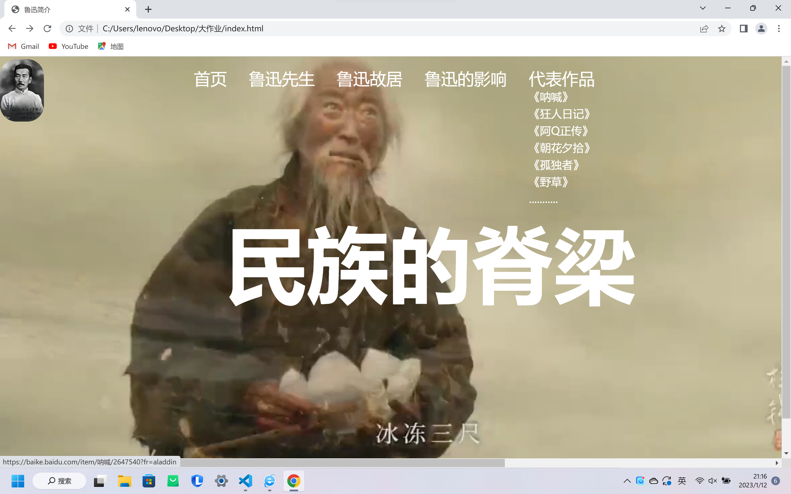
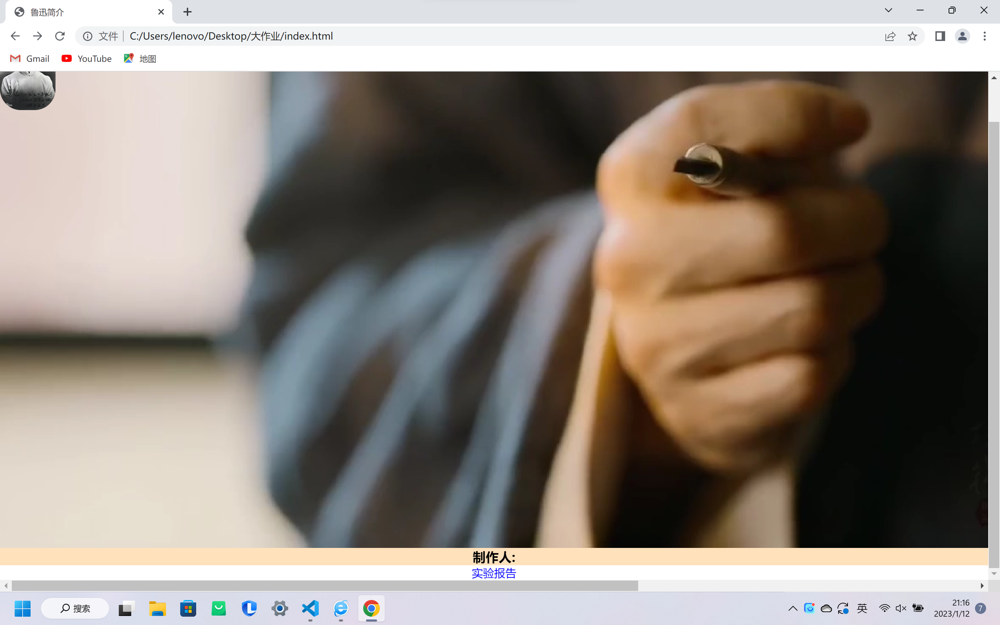
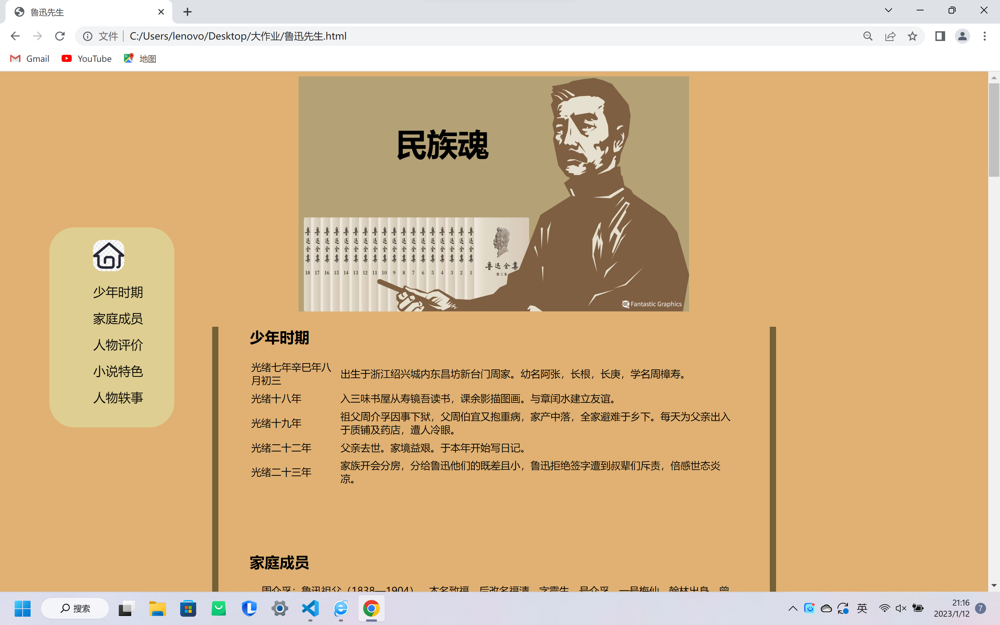
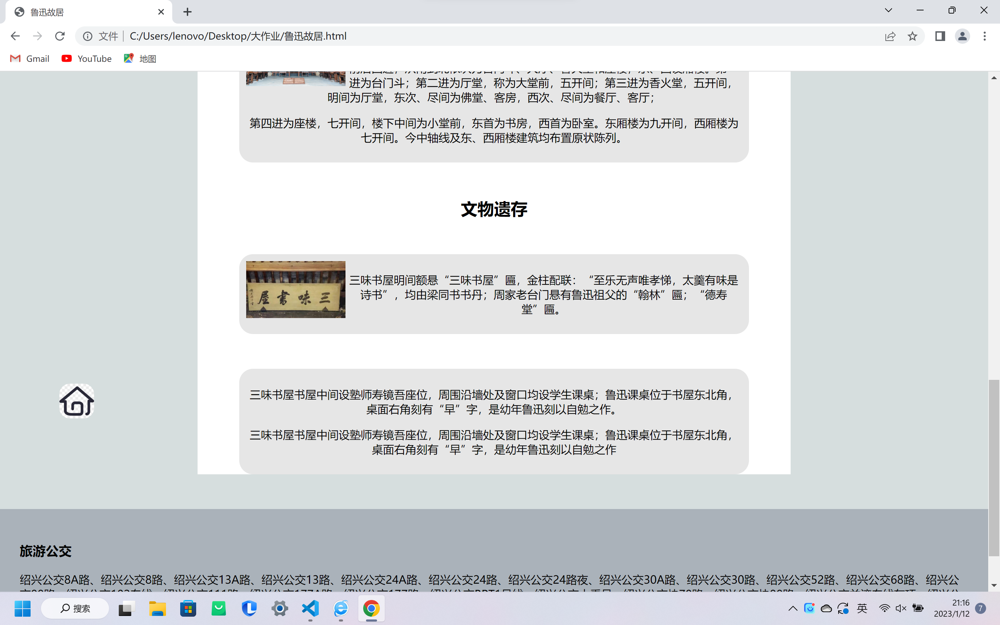
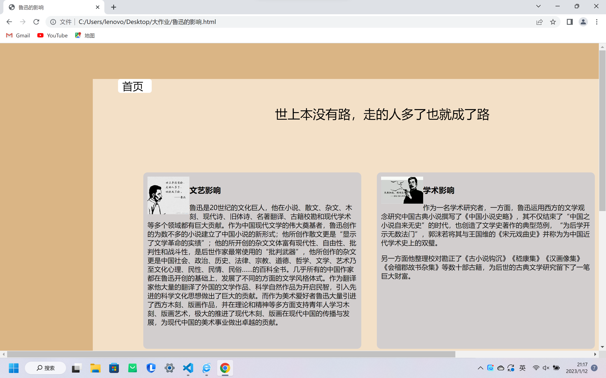

实验报告
个人：
黄永杰 0223249 2213班
网站名称：
鲁迅
主题：
鲁迅先生
目的是为了对伟人致敬
网页的大致情况：
三个子网页均实现了主页返回功能
1.二级导航栏的实现及以视频作为网页背景
2.每个网站基本使用了伪类和伪元素，以及定位
3.首页的图片运用了position absolute定位


- 1.侧边栏的实现 fixed的定位
- 2.文字悬浮在图片上
- 3.table的对数据存储的运用
- 4.id功能与侧边栏的结合

5.文字与图片的结合运用了float+clear的布局


运用了vscode工具
遇到的困难：
- 视频背景运用，视频需要从网上寻找
- 为考虑视频背景对不同屏幕适用（参考了CSDN）
- 后面由于音频无法自动播放，查阅了大量的资料。
发现是因为维护访问者的权利，大部分浏览器禁止音频自动播放
-
由于上传文件对大小的要求：我反复对视频剪辑
注：
为了有更好的体验，谷歌的用户需将此网站设定为自定义允许播放音乐
自我评价
自我感觉良好，对老师教的内容基本完成了运用
总结:
已完成作业的所有要求
，对display行，块等的熟练运用,
并在css文件中完成了中文注释
展望：
希望能继续了解网站开发的新知识与技术
，以此来实现网站功能的多元化